PORTFOLIO
英文教材設計與命題作品集
我是紀承緯（Baxter Chi），臺大外國語文學系學生，擔任英文家教，教學對象從國小到高中與成人。這一頁整理我自己編寫的題本、講義與課程規劃，以及實際傳出的訊息截圖；所有材料都是節錄，訊息已遮去姓名、日期等可辨識資訊。
- TOEIC 980
- IELTS 8.0（聽、讀 9.0）
- 學測英文 15 級分
01
教材與命題
題目、例句與解析都是自己寫的。每張圖是一頁節錄，點開看原尺寸。


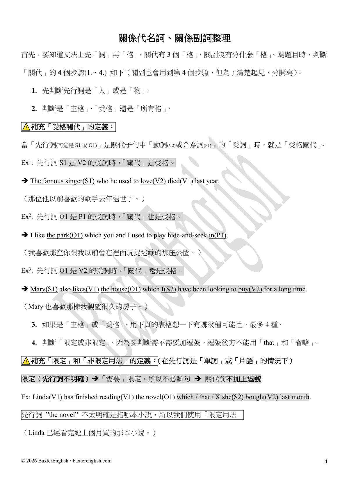
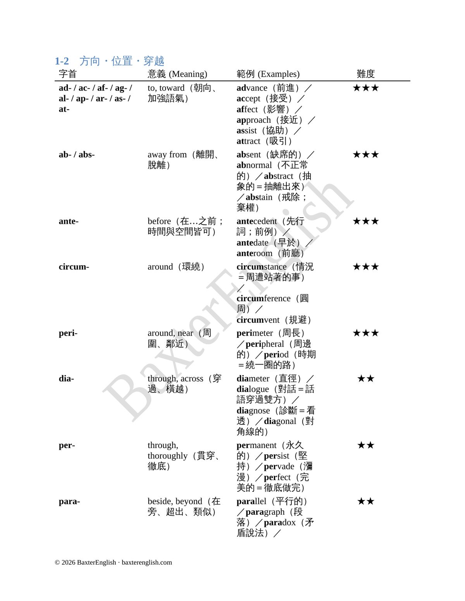
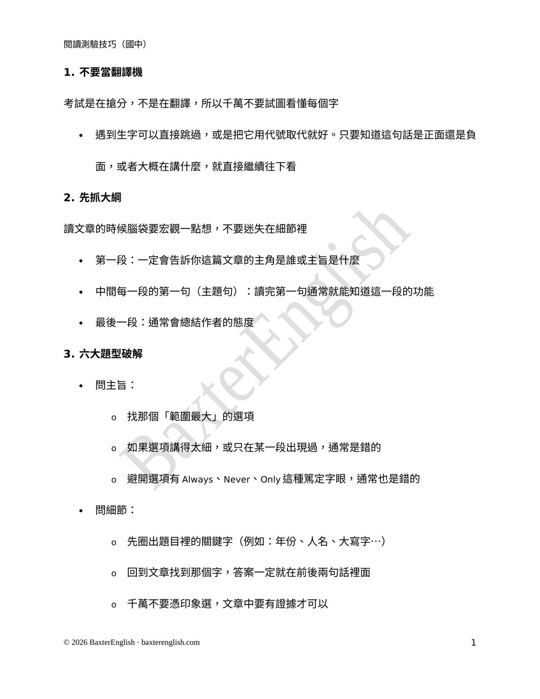
02
課程規劃
每位學生的進度都排成表格，和家長、學生共用；長期目標拆成每週做得到的量。以下節錄自實際使用的規劃表，重畫成表格：姓名、日期、書名都已移除，週次從第一堂課起算。
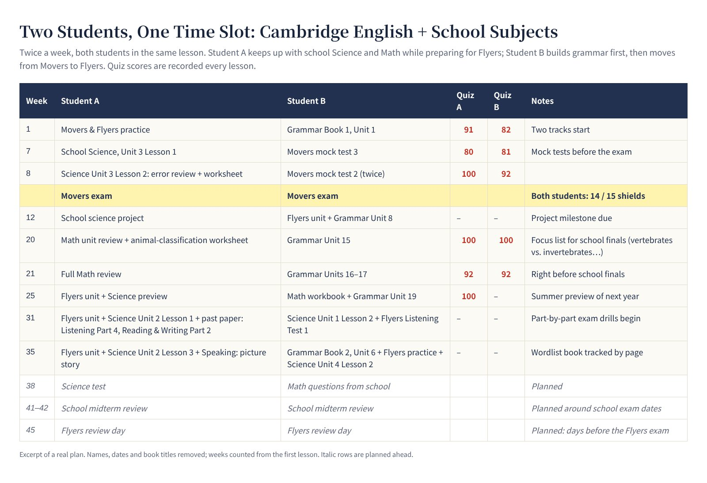
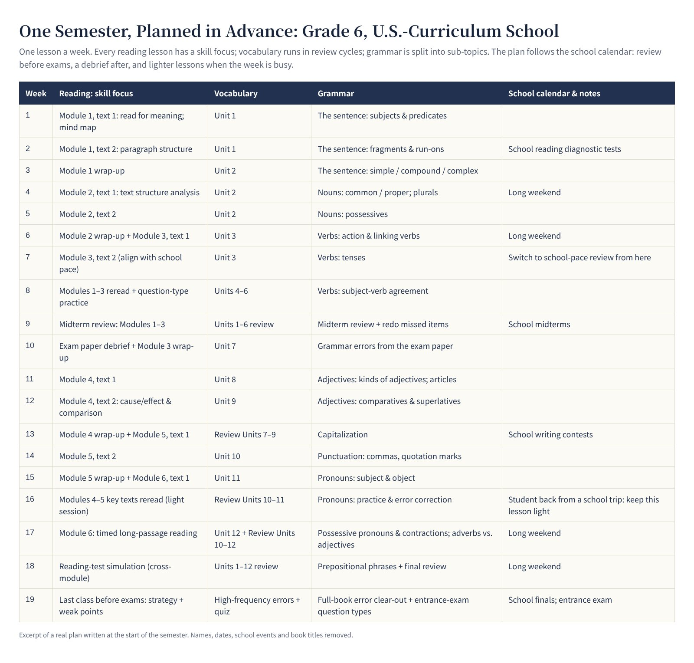
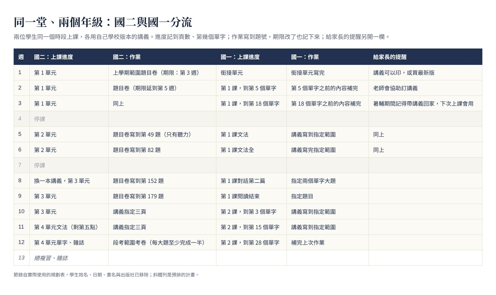
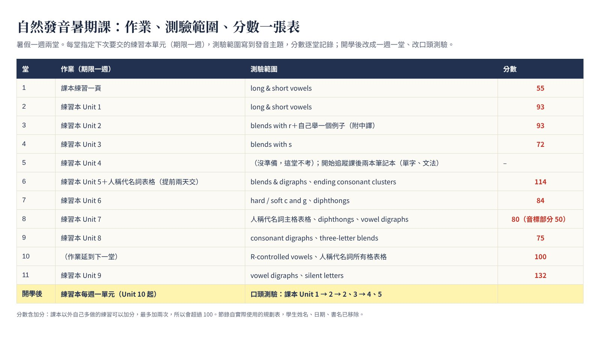
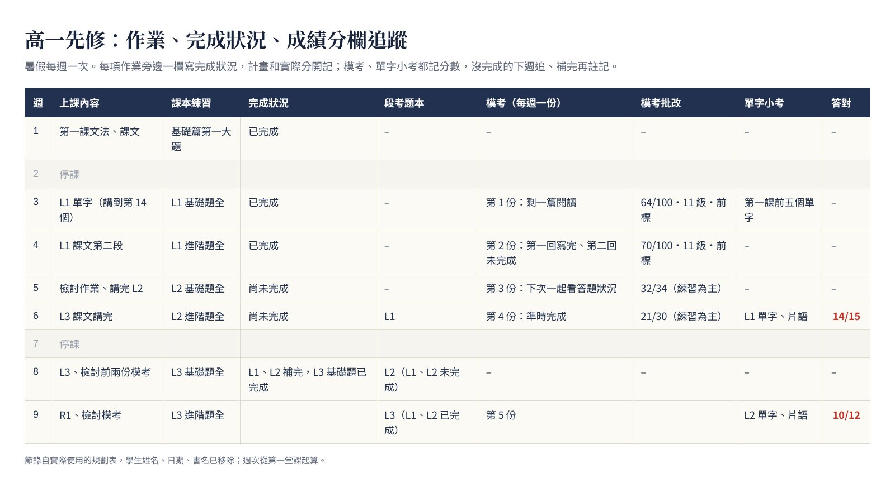
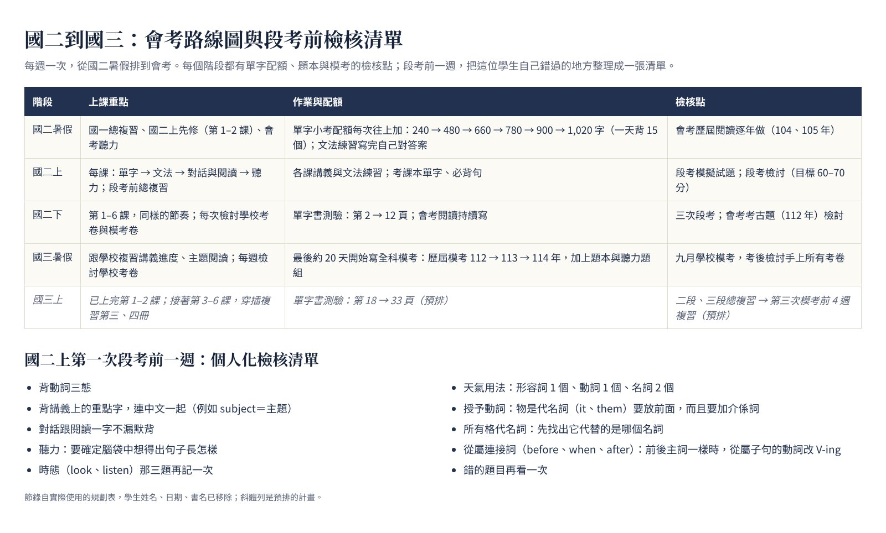


03
家長與學生溝通
實際傳出的 LINE 訊息截圖。學生姓名、日期、連結與其他可辨識資訊已用對話框底色遮去，只保留我送出的那則。
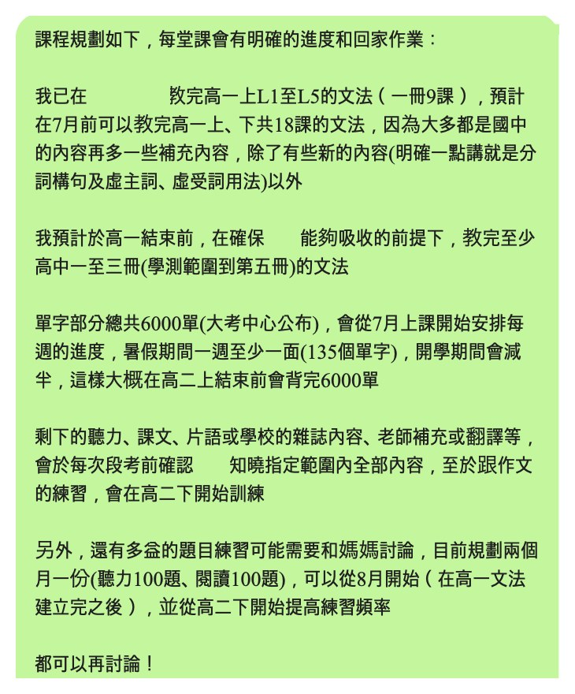
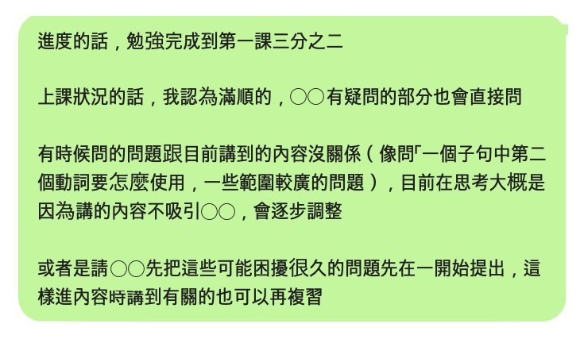
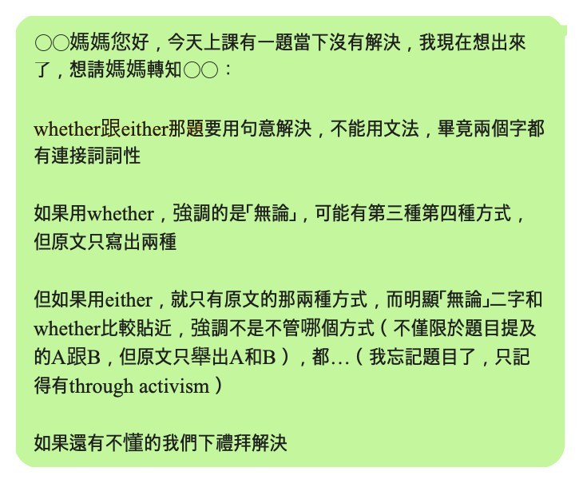
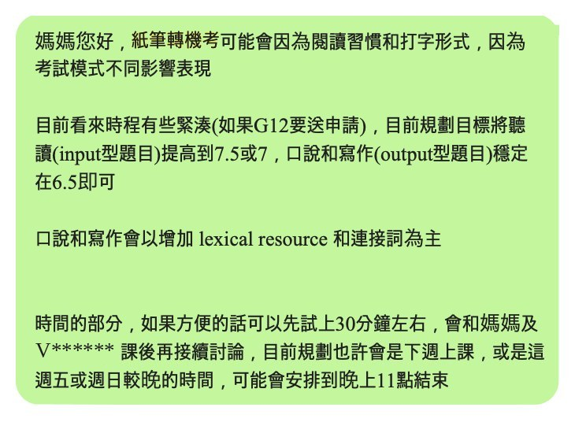
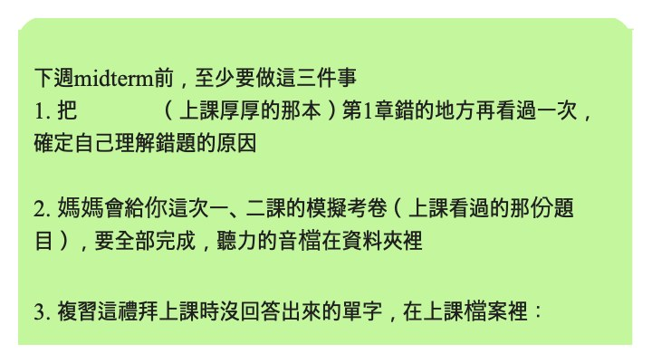